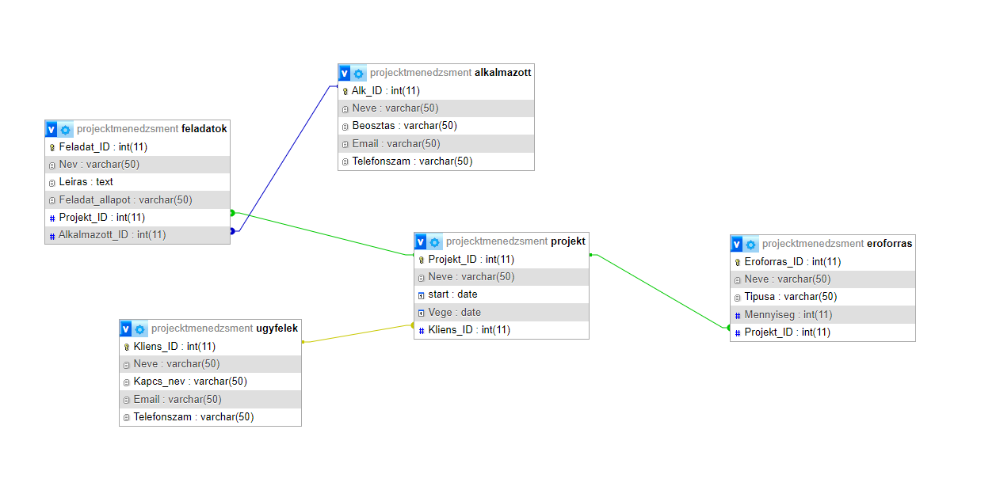

Sóti Máté vagyok a DUE Bánki Donát Technikum végzős tanulója
11. évfolyam
Első Félév
Elektrotechnika
A képek egy bipoláris tranzisztoros erősítő áramkörhöz kapcsolódó méréseket és számításokat tartalmazzák. Az első ábra egy szimulációs áramkört mutat, amelyben az egyes csomópontokon mért feszültségek és áramok láthatók. A második táblázat a mért és számolt értékeket hasonlítja össze.
Feszültségek és Áramok: A számolt és mért értékek kis eltérést mutatnak, ami valós mérési hibákra vagy a modell egyszerűsítésére vezethető vissza.
Tranzisztor Paraméterek: A tranzisztor működése az aktív tartományban van, amit az Ube és Uce értékei is alátámasztanak.
Bázis-, Kollekor- és Emitteráramok: Az áramok közötti összefüggések megfelelnek a tranzisztor alapvető működésének
Önreflexió
➣Nehéz volt
➣Kevés gyakorlat sok elmélet
Mikrovezérlő programozás
A képeken egy Arduino-alapú parkolóradar kapcsolási rajza és annak működési elve látható. A projekt egy ultrahangos távolságérzékelőt (HC-SR04) használ, amely méri a tárgyak távolságát, és ennek alapján egy buzzer vagy LED figyelmezteti a felhasználót. Az áramkör Arduino mikrokontrollerre épül, amely feldolgozza az érzékelő jeleit és vezérli a kimeneti eszközöket.
Önreflexió
➣Gyakorlat elsajátítása
➣Projekt munkában való részvétel
➣Segítőkész tanár
Második Félév
Programozás Alapjai
Ez a Python-kód egy egyszerű számkitalálós játékot valósít meg. A program a felhasználótól bekéri egy véletlenszerűen generált szám alsó és felső határát, majd a játékosnak próbálkoznia kell a szám kitalálásával. Ha a tipp helytelen, a program visszajelzést ad arról, hogy a keresett szám nagyobb vagy kisebb. A játék addig folytatódik, amíg a felhasználó el nem találja a számot, vagy ki nem lép a -1 megadásával. A program a végén kiírja, hány próbálkozás kellett a helyes válaszhoz.
Önreflexió
➣Játékos programok
➣Könnyen tanulható
Digitális Áramkörök
Az első kép egy táblázatot mutat, amely egy bináris számrendszerben értelmezett súlyozott összegzést tartalmaz. Az oszlopok különböző biteket reprezentálnak, ahol az E, T, A, B oszlopok bináris súlyokat jelölnek, míg az F⁴ egy extra bitként szerepel. A táblázat jobb oldali oszlopa a súlyozott összeg kiszámítását mutatja minden egyes bináris kombinációra.
A második kép egy logikai áramkört ábrázol, amely valószínűleg a táblázatban szereplő logikai összefüggéseket modellezi. Az E, T, A, B bemenetek egy sor logikai kapuhoz csatlakoznak, amelyek végül egy LED-et vagy kijelzőt vezérelnek. Az áramkör működése a kapcsolók állásától függ, és ha a megfelelő logikai feltétel teljesül, a végén lévő kimenet aktiválódik.
Önreflexió
➣Áramkörök ismerése
➣Szimuláció
➣Számrendszerek ismerete
12. évfolyam
Első Félév
Adatbáziskezelés Alapjai

Az adatbázis-kezelés az adatok hatékony tárolását, lekérdezését és kezelését biztosítja egy rendszeren belül. Az ilyen relációs adatbázisokban (mint a képen látható) az adatok táblákban tárolódnak, amelyek kapcsolatokon keresztül összekapcsolhatók.
Önreflexió
➣Alapok elsajátítása
➣Kódok ismerete
Hálózatkezelés
A kép egy részletes hálózati struktúrát ábrázolhat, amelyben a "Grounding" címke alatt számos érték szerepel, 0.5-től 436.5-ig. Ezek az értékek valamilyen hálózati csomópontokat jelképezhetnek, amelyeket valamilyen hálózatkezelési folyamat során használnak. A hálózatkezelés során fontos lehet a különböző csomópontok közötti kapcsolatok pontos nyomon követése és kezelése, hogy a hálózat hatékonyan működjön. A kép egy olyan rendszert mutat be, ahol a csomópontok közötti kapcsolatok számítanak, és ezeket az értékeket használják a hálózat optimalizálására vagy hibaelhárítására.
Önreflexió
➣Segítőkész tanár
➣Sok elmélet
➣Cisco Packet Tracer
Második Félév
PLC programozás
A közlekedési lámpák rendszerei nélkülözhetetlenek a modern városi közlekedésben. Ezek a rendszerek nemcsak a forgalom zökkenőmentes lebonyolítását segítik, hanem biztonságot is nyújtanak a gyalogosok és a járművek számára. A közlekedési lámpák működése egy jól megtervezett PLC (Programmable Logic Controller) programon alapul, amely biztosítja a lámpák szinkronizált váltását és a különböző forgalmi helyzetek kezelését.
Önreflexió
➣Kevés gyakorlati lehetőség
Számítógépes szimuláció
A képen egy elektronikus áramkör rajza látható, amely egy NE555 időzítő integrált áramkört (U1) tartalmaz. Az áramkörben számos ellenállás (R1, R2, R3, R4), egy kondenzátor (C1), egy NPN tranzisztor (Q1, BC547 típusú) és egy LED (LED1) található. Az áramkör kapcsolási rajza mutatja az egyes komponensek csatlakozási pontjait, beleértve a tápfeszültség (VCC), a földelés (GND), a trigger (TRIG), a kimenet (OUT), a reset (REST), a kisütés (DISCH), a küszöb (THRES) és a vezérlés (CONT) érintkezőket.
Önreflexió
➣Kevés elmélet sok gyakorlat
➣EASYEda
13. évfolyam
Első Félév
Munkavállalói idegen nyelven
Az önéletrajz azért fontos, mert bemutatja a végzettséget, munkatapasztalatot és készségeket egy állásra vagy képzésre jelentkezéskor. Segít a munkáltatóknak gyorsan áttekinteni a jelölt alkalmasságát, és első benyomást ad a jelentkezőről. Egy jól megírt önéletrajz növeli az esélyeket egy interjúra vagy lehetőségre.
Önreflexió
➣Segít elhelyezkedi a késöbbiekben
IoT
Egy ESP8266 alapú fejlesztőmodul látható, amelyhez néhány vezeték segítségével egy szenzor van csatlakoztatva. A mikrokontroller USB-kábellel van csatlakoztatva egy számítógéphez, amely a programozásához és adatkommunikációhoz szükséges.
egy okostelefon böngészőjében egy weboldal nyitva van, amely az ESP8266 által mért hőmérsékletet és páratartalmat jeleníti meg. Ez arra utal, hogy az ESP8266 egy webes szerverként működik, amely valós időben továbbítja az érzékelő adatait a hálózaton keresztül.
Önreflexió
➣Mikrokontrollerek
➣Gyakorlati feladatok
Második Félév
Programfejlesztés
Programfejlesztés tantárgy során egy Windows Formos programot csináltunk amit összekapcsoltunk az Adatbáziskezelés tantárgy munkánkkal igy a Formban különbözö Comboboxokban kiirja az adatokat amik az adatbázisban van
Önreflexió
➣Kódok ismerete
➣Windows Form
Robottechnika CAD/CAM
A képen egy elektronikai áramkör részlete látható, amelyben különböző alkatrészek szerepelnek, például ellenállások (1k), kondenzátorok (10µF) és egy tekercs (400µH). Az áramkörben szereplő alkatrészek értékei és a 200kHz-es frekvencia arra utal, hogy ez egy magas frekvenciájú alkalmazás, például egy rádiófrekvenciás (RF) áramkör vagy egy kapcsolóüzemű tápegység része lehet.
Önreflexió
➣Sok gyakorlat kevés elmélet
➣Falstad
Önreflexió
Ahogy visszatekintek a középiskolás éveimre, látom, mennyit változtam és fejlődtem az évek során. Voltak kihívások, de fokozatosan megtaláltam a helyem, és elkezdtem kialakítani a tanulási szokásaimat.
Az elején még bizonytalan voltam abban, hogyan kezeljem a különböző tantárgyakat és a növekvő elvárásokat, de idővel rájöttem, hogy a kitartás és a megfelelő időbeosztás kulcsfontosságú. Megtanultam, hogyan osszam be hatékonyan az időmet, és hogyan alkalmazkodjak a váratlan helyzetekhez.
Nemcsak tanulmányi szempontból fejlődtem, hanem emberileg is. Nyitottabb lettem, bátrabban vállalom a véleményemet, és jobban értékelem a csapatmunkát. A barátaim és tanáraim támogatása segített abban, hogy megerősödjek és bízzak önmagamban.
Bár még mindig van hová fejlődnöm, büszke vagyok az eddig megtett útra. A középiskolás évek során megszerzett tapasztalatok és tanulságok elkísérnek a jövőben is, és segítenek abban, hogy magabiztosan haladjak tovább az utamon.